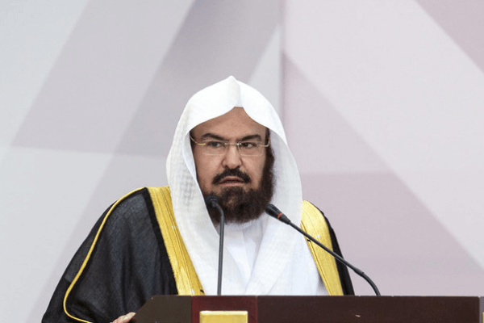

Lahir di Qassim, Arab Saudi, pada tahun 1961, Syekh Abdul Rehman Al-Sudais adalah salah satu tokoh paling terkenal di kalangan umat Islam. Dia dikenal luas karena suaranya yang indah dan penyampaian khotbahnya yang kritis dan kuat. Imam Masjidil Haram menempuh pendidikan di Riyadh, dan telah menghafal Al-Qur'an pada usia muda 12 tahun. Pada tahun 1982, Syekh Abdul Rehman Al-Sudais menyelesaikan wisuda dari Fakultas Syariah dan menyelesaikan tahun terakhir studinya di Umm. Universitas Al Qura. Pada tahun 1995, Syekh Abdul Rehman Al-Sudais memperoleh gelar PhD di bidang Syariah. Syekh Abdul Rehman Al-Sudais diangkat sebagai Imam Masjid Agung pada tahun 1894 ketika ia baru berusia 22 tahun. Sejak itu, ia memimpin salat Tarawih setiap tahun dan mencapai tonggak sejarah dengan menyelesaikan Al-Quran dan membaca Khatam-ul Quran Dua untuk yang ke 35 kalinya . Raja Salman menunjuk Syekh Abdul Rehman Al-Sudais untuk menyampaikan Khotbah Terakhir pada tahun 2016 dan 2020. Dia adalah Khateeb dan Imam Besar Masjid Al Haram saat ini . Beliau juga menjabat Presiden Presiden Umum Urusan Dua Masjid Suci.